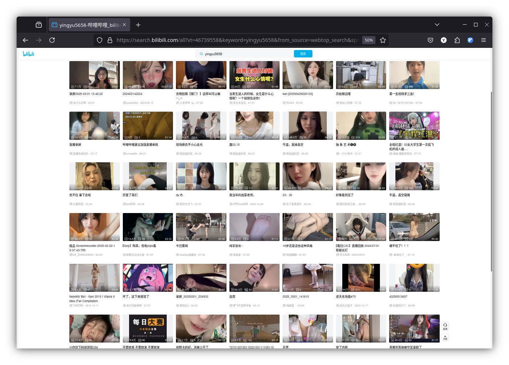
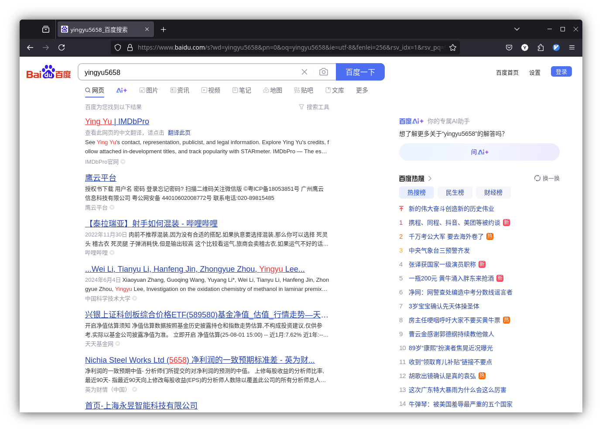
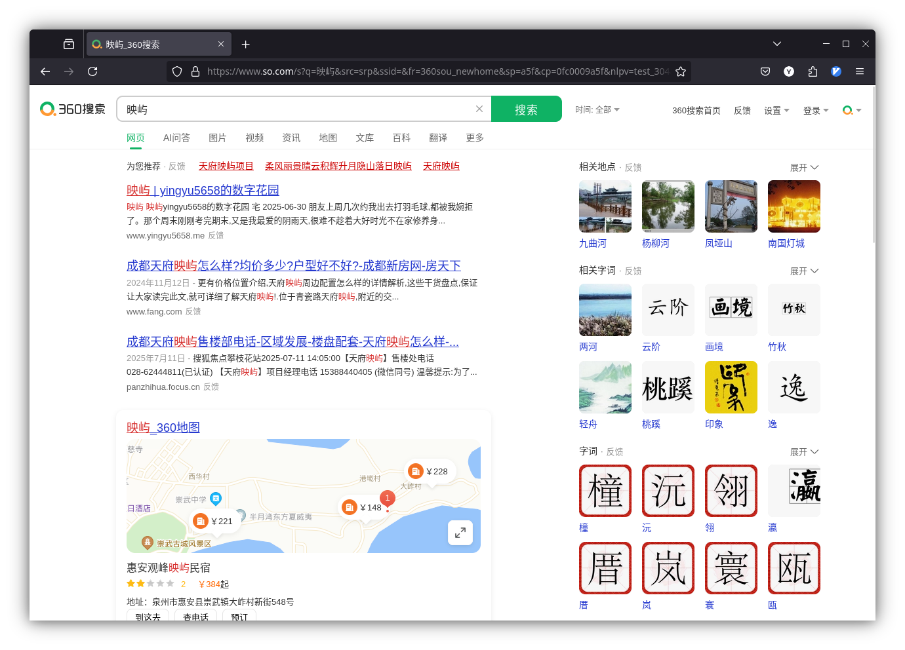

在Bing自搜
今天实在是太闲了，在bing搜了一下我自己的id，结果看到了早期刚建站时的各种黑历史。搜索引擎的缓存还没有消失，已经快一年了。甚至连最早用的第一个域名都挂在上面，但是那个域名现在已经易主了，现在是一个卖赌博机器的网站。估计站长看到有一个很蠢的中文页面还被搜索引擎收录也是很困惑。
这么说来，我这一年的成长倒是挺多，证据就是看到这些东西就像看到自己四五年前发的朋友圈和QQ空间一样羞耻。可是前者能删，但搜索引擎也不是我家开的。
在BiliBili自搜

我能说什么，我只能呵呵呵。一群娼妓已经把这个网站占领了。在我关闭个性化推荐之前，满屏幕都是赛博妓女。乐器视频底下出奇多。但它们不如妓女，只要坐在镜头前，甚至不开摄像头，就会有人给这种人送钱，妓女起码付出了身体换取钱财，这种人就是典型的不劳而获。用赛博妓女这个词称呼都算侮辱了妓女。
在Google自搜

比Bing收录的内容及时多了，起码不会到黑历史的程度。不过确确实实有一个真正意义上的黑历史，我承认当时的言论过于激进和轻浮了。但我会保持对跨性别群体的看法。
在百度自搜

很遗憾，只有指定site:www.yingyu5658.me才能看到我的站点。

在360自搜

搜yingyu5658没有什么结果，但映屿的权重甚至比那几个卖房的网页还高，在Bing上不是这样的。
在Yandex自搜

Github页面比较靠前，前一阵子在Bing上几乎搜不到yingyu5658.me这个域名，结果都是Github Pages。
看似自搜，实际上是检测各大搜索引擎对自己网站的收录情况，现在国人用的最多的搜索引擎应该是Bing吧，对个人站算是比较友好了，甚至一年前的链接都不下，可能和我之前弃用服务器、更换域名的处理手法有关，但那时候真是什么都不懂，虽然现在也是。
还有一些不知名的小网站收录了我以前写的技术文章，不过也都是老链接，hexo的链接。